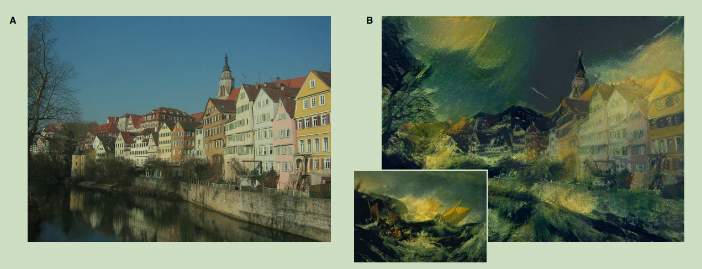
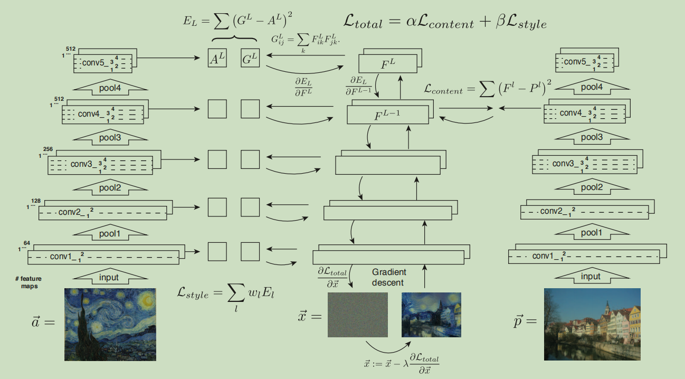
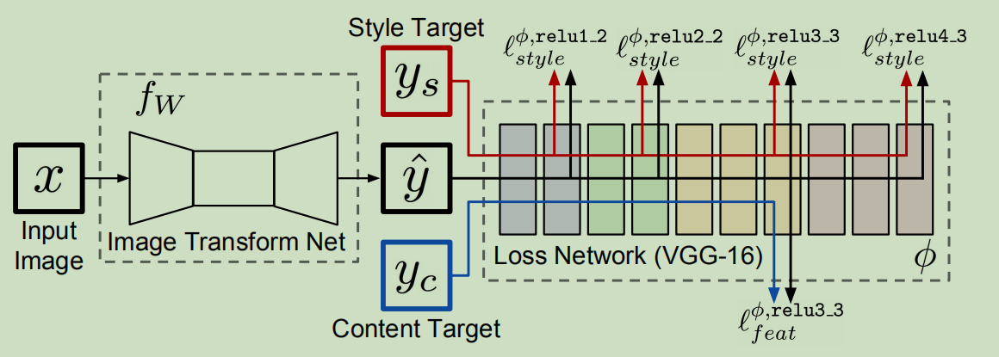

应用广泛的perceptual loss
感知机损失是被\(Neural~Style\)发扬光大的。\(CVPR16\)的一篇论文能够完成下面这种神奇的效果：

假设样式图片，混合图片，内容图片分别为\(S,X,C\)，来看看它是怎么做的：随机初始化一张噪声图片作为\(X\)的初值，将\(C*H*W\)个像素值作为待训练的参数，训练它们，最后就得到了最终的混合图片。能让这个设计\(work\)的损失函数就是感知机损失。
\(Neural~Style\)算法确实好，但他不能做到实时：如果我想风格化一张自己的照片，就需要从零开始去训练混合图片。基于\(Neural~Style\)的感知机损失，\(ECCV16\)的一篇文章提出了\(Fast~Neural~Style\)算法，使得实时风格化成为了可能。
\(Fast~Neural~Style\)算法的想法也十分简单，就是去训练一个类似\(AutoEncoder\)的网络完成对任意图片的风格化。还是设样式图片，混合图片，内容图片分别为\(S,X,C\)，网络的输入是\(C\)，输出是\(X\)，感知机损失就是\(C,X\)之间的内容损失与\(S,X\)之间的样式损失的加权和。

这里插播一句，这种实时的算法效果是没有原始算法好的。但是搭配\(Instance~Normalization\)，\(Fast~Neural~Style\)效果会更好。\(perceptual~loss\)虽然来源于\(Neural~Style\)，但是其应用远不止于此。实际上，在生成模型领域，常用的是感知机损失中的内容损失，因为它反映了图像深层次的相似度信息。